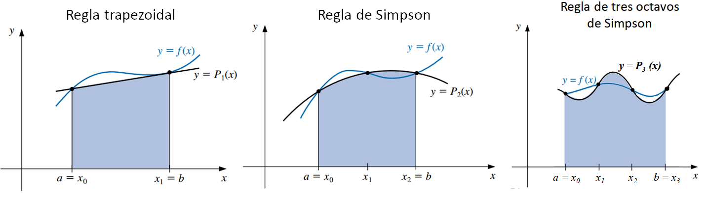
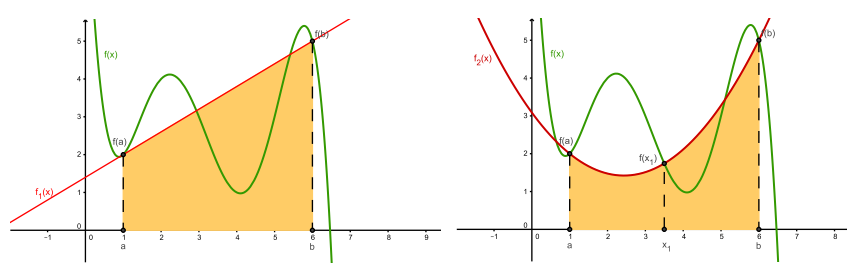
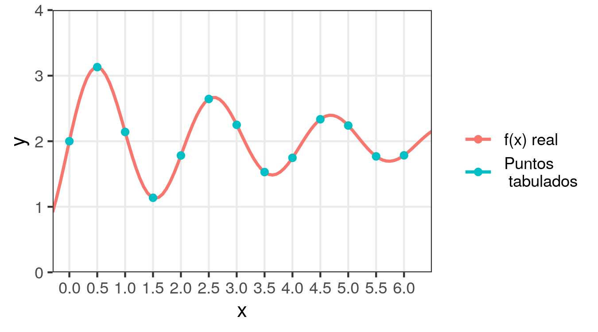
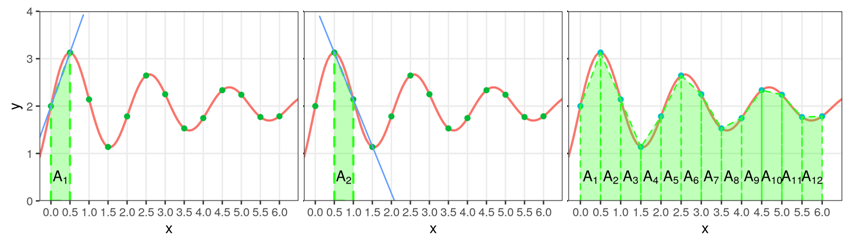
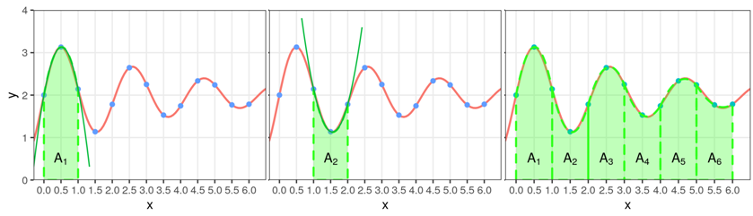
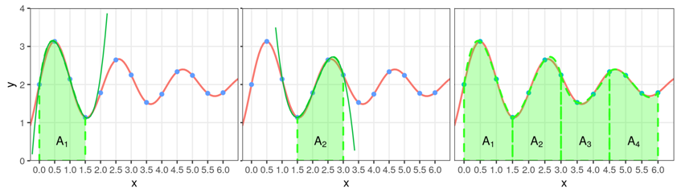

7 Aproximación polinomial - Parte 2: Derivación e integración
7.1 Diferenciación numérica
Nos enfrentamos al problema de aproximar el valor de la derivada de una función \(f(x)\).
Por definición, la derivada de la función \(f\) en \(x_0\) es:
\[ f'(x_0) = \lim_{h\rightarrow0} \frac{f(x_0+h) - f(x_0)}{h} \]
Esta fórmula proporciona una forma obvia de generar una aproximación para \(f'(x_0)\): simplemente hay tomar \(h\) pequeño y calcular:
\[ \frac{f(x_0+h) - f(x_0)}{h} \]
Esta idea sencilla tiene el problema de enfrentarse a errores de redondeo (ya que sabemos que las divisiones por números pequeños son operaciones “delicadas”).
Sin embargo, es un buen punto de partida y coincide con la idea de derivar la expresión del polinomio de interpolación de Lagrange que pasa por los puntos \((x_0, f(x_0))\) y \((x_1, f(x_1))\), considerando \(x_1 = x_0 + h\).
Recordemos la interpolación lineal de Lagrange:
\[ \begin{aligned} P_1(x) &= \frac{x - x_1}{x_0 - x_1} f(x_0) +\frac{x - x_0}{x_1 - x_0} f(x_1) \\\\ &= \frac{x - x_0 -h}{-h} f(x_0) +\frac{x - x_0}{h} f(x_0+h) \end{aligned} \]
Ya estudiamos que disponemos de una fórmula para el error de truncamiento (o aproximación) al utilizar polinomios interpolantes. Cuando el polinomio es de grado \(n=1\), dicha fórmula queda como:
\[ \frac{(x-x_0)(x-x_0-h)}{2} f''(\xi) \qquad \xi \text{ entre } x_0 \text{ y } x_1 = x_0+h \]
Entonces podemos escribir:
\[ \begin{aligned} f(x) &= P_1(x) + Error \\\\ &= \frac{x - x_0 -h}{-h} f(x_0) +\frac{x - x_0}{h} f(x_0+h) + \frac{(x-x_0)(x-x_0-h)}{2} f''(\xi) \end{aligned} \]
Si derivamos tenemos:
\[ \begin{aligned} f'(x) &= -\frac{1}{h} f(x_0) +\frac{1}{h} f(x_0+h) + D_x \Big[ \frac{(x-x_0)(x-x_0-h)}{2} f''(\xi) \Big] \\\\ &= \frac{f(x_0+h) - f(x_0)}{h} + D_x \Big[ \frac{(x-x_0)(x-x_0-h)}{2} f''(\xi) \Big] \end{aligned} \]
Borrando el término relacionado con \(\xi\) obtenemos la aproximación propuesta inicialmente:
\[ f'(x) \approx \frac{f(x_0+h) - f(x_0)}{h} \]
7.1.1 Fórmula general
- Esta idea se puede generalizar para obtener las fórmulas generales de la aproximación a la derivada:
Definición: si \(x_0, x_1, ..., x_n\) puntos distintos en algún intervalo \([a, b]\) y \(f\) tiene derivadas continuas hasta de orden \(n+1\) en dicho intervalo, sabemos por la interpolación de Lagrange que:
\[ f(x) = \sum_{k=0}^{n} f(x_k) L_{k}(x) + \frac{(x-x_0)...(x-x_n)}{(n+1)!} f^{(n+1)}(\xi) \qquad L_{k}(x) = \prod^{n}_{\substack{i=0 \\ i \neq k}} \frac{x-x_i}{x_k-x_i} \]
para algún \(\xi \in [a, b]\).
Al derivar esta ecuación obtenemos:
\[ f'(x) = \sum_{k=0}^{n} f(x_k) L'_{k}(x) + D_x \Big[ \frac{(x-x_0)...(x-x_n)}{(n+1)!} f^{(n+1)}(\xi) \Big] \]
En general no se tiene conocimiento sobre \(D_x(f^{(n+1)}(\xi))\) por lo cual no se puede acotar el error de truncamiento, pero si \(x\) es uno de los nodos \(x_j\), entonces se demuestra que la fórmula queda igual a:
\[ f'(x_j) = \underbrace{\sum_{k=0}^{n} f(x_k) L'_{k}(x)}_{\text{Aproximación}} + \underbrace{\frac{f^{(n+1)}(\xi)}{(n+1)!} \prod^{n}_{\substack{k=0 \\ k \neq j}} (x_j-x_k)}_{\text{Error}} \]
y es llamada fórmula de \(n+1\) puntos para aproximar \(f'(x_j)\).
De esta forma, se puede acotar el error si a la derivada la calculamos en algún nodo del polinomio interpolante \(x_j\), pero nada impide utilizar la fórmula en otro caso, si estamos dispuestos a trabajar sin una cota para el error.
- En general, el uso de más puntos de evaluación en la ecuación anterior produce mayor precisión, pero el número de evaluaciones funcionales y el crecimiento del error de redondeo disuaden un poco de esto.
- Las fórmulas más comunes son las de tres y cinco puntos de evaluación. Veremos sólo las de 3.
7.1.2 Fórmulas de tres puntos
Cuando se consideran tres puntos de evaluación, a partir del polinommio interpolante de grado de 2 de Lagrange, la fórmula anterior queda igual a:
\[ \begin{aligned} f'(x_j) &= f(x_0) \frac{2x_j-x_1-x_2}{(x_0-x_1)(x_0 - x_2)} \\\\ &+ f(x_1) \frac{2x_j-x_0-x_2}{(x_1-x_0)(x_1 - x_2)} \\\\ &+ f(x_2) \frac{2x_j-x_0-x_1}{(x_2-x_0)(x_2 - x_1)} \\\\ &+ \frac{f^{(3)}(\xi)}{6} \prod^{2}_{\substack{k=0 \\ k \neq j}} (x_j-x_k) \end{aligned} \]
Esto se simplifica mucho si los nodos están igualmente espaciados, de modo que \(x_1 = x_0 + h\) y \(x_2 = x_0 + 2h\).
Implementando dichos reemplazos y aplicando cambios de variables, a partir de lo anterior se deducen dos fórmulas de tres puntos para aproximar \(f'(x_0)\):
Fórmula del extremo de tres puntos:
\[ f'(x_0) = \frac{-3 f(x_0) + 4 f(x_0+h) - f(x_0 + 2h)}{2h} + \frac{h^2}{3} f^{(3)}(\xi), \qquad \xi \text{ entre } x_0\ \text{ y }\, x_0+2h \]
Fórmula del punto medio de tres puntos:
\[ f'(x_0) = \frac{f(x_0+h) - f(x_0 -h)}{2h} - \frac{h^2}{6} f^{(3)}(\xi), \qquad \xi \text{ entre } x_0-h\ \text{ y }\, x_0+h \]
- La fórmula del extremo se usa para aproximar la derivada cuando \(x_0\) es uno de los extremos del intervalo (\(h\) puede ser negativo), mientras que la otra cuando \(x_0\) es el punto medio.
- La fórmula del punto medio presenta un error que es la mitad del de la fórmula del extremo y además requiere que \(f\) se evalúe solamente en dos puntos.
7.1.3 Inestabilidad del error de redondeo
- Para reducir el error de truncamiento necesitamos reducir \(h\).
- Pero se demuestra que conforme \(h\) se reduce, el error de redondeo crece.
- En la práctica, entonces, casi nunca es ventajoso dejar que \(h\) sea demasiado pequeña, porque en este caso, el error de redondeo dominará los cálculos.
- La diferenciación numérica es inestable ya que los valores de \(h\) necesarios para reducir el error de truncamiento causan que el error de redonde crezca.
7.2 Integración numérica
- A menudo surge la necesidad de evaluar la integral definida de una función que no tiene una antiderivada o cuya antiderivada no es fácil de obtener (por ejemplo, para calcular probabilidades bajo la distribución normal).
- En estos casos se puede aproximar el valor de la integral mediante los métodos de cuadratura.
Definición: los métodos de cuadratura se utilizan para aproximar la integral definida \(\int_a^b f(x) dx\) mediante una suma \(\sum_{k=0}^n a_k f(x_k)\).
La idea básica es seleccionar un conjunto de nodos \(x_0, x_1, ..., x_n\) en el intervalo \([a, b]\) e integrar el polinomio interpolante de Lagrange que pase por dichos nodos.
Recordemos la expresión del polinomio de Lagrange junto con su término de error:
\[ \begin{aligned} f(x) &= P_n(x) + Error \\\\ &= \sum_{k=0}^{n} f(x_k) L_{k} + \frac{f^{(n+1)}(\xi)}{(n+1)!} \prod_{k=0}^n (x-x_k) \qquad \xi \in (a, b) \qquad L_k = \prod^{n}_{\substack{i=0 \\ i \neq k}} \frac{x-x_i}{x_k-x_i} \end{aligned} \]
- Integrando nos queda:
\[ \int_a^b f(x) dx = \underbrace{\sum_{k=0}^{n} \Big( \overbrace{\int_a^b L_{k} dx}^{a_k}\Big)f(x_k) }_{\text{Fórmula de cuadratura}} + \underbrace{\frac{1}{(n+1)!} \int_a^b f^{(n+1)}(\xi) \prod_{k=0}^n (x-x_k) dx}_{\text{Error de aproximación}} \]
- \(\int_a^b L_{k} dx\) es fácil de hallar porque se trata de un polinomio de grado \(n\) que depende de los nodos observados \(x_i\).
- La fórmula anterior es general para cualquier cantidad de nodos \(n\), sean equidistantes o no.
- Cuando se trabaja con nodos igualmente espaciados, esta expresión da lugar a conjunto de fórmulas conocidas como Fórmulas de integración de Newton-Cotes.
7.2.1 Fórmulas comunes y cerradas de Newton-Cotes
La denominación de “cerradas” hace referencia a que los extremos del intervalo \([a, b]\) se incluyen como nodos (están las fórmulas “abiertas” pero no las veremos).
La denominación de “comunes” distingue a estas fórmulas de las “compuestas” que veremos en la próxima sección.
Vamos a ver tres fórmulas, que resultan de simplificar la expresión anterior para los siguientes casos particulares:
- Cuando se consideran sólo dos nodos en el intervalo \([a, b]\) (regla trapezoidal).
- Cuando se consideran tres nodos equidistantes en el intervalo \([a, b]\) (regla de Simpson).
- Cuando se consideran cuatro nodos equidistantes en el intervalo \([a, b]\) (regla de tres octavos de Simpson).
7.2.1.1 Regla trapezoidal
- Se consideran sólo dos nodos en el intervalo \([a, b]\).
- En este caso se tiene \(a = x_0\) y \(b=x_1\) y llamamos \(h = x_1 - x_0\).
- \(P_n(x)\) es la recta que pasa por los puntos \((x_0, f(x_0))\) y \((x_1, f(x_1))\).
- La fórmula es:
\[ \int_{x_0}^{x_1} f(x) dx = \frac{h}{2} [f(x_0) + f(x_1)] - \underbrace{\frac{h^3}{12} f''(\xi)}_{\text{Error}} \]
- Recibe el nombre de regla trapezoidal porque cuando \(f\) es una función con valores positivos, \(\int_a^b f(x) dx\) se aproxima mediante el área de un trapecio.
7.2.1.2 Regla de Simpson
- Resulta de la integración sobre \([a, b]\) del segundo polinomio de Lagrange con nodos igualmente espaciados \(x_0 = a\), \(x_1 = x_0 +h\) y \(x2 = x_0+2h=b\), es decir: \(h=(b-a)/2\).
\[ \int_{x_0}^{x_2} f(x) dx = \frac{h}{3} [f(x_0) + 4f(x_1) + f(x_2)] - \underbrace{\frac{h^5}{90} f^{(4)}(\xi)}_{\text{Error}} \]
- El término de error queda en función de la cuarta derivada de \(f\), por lo que da resultados exactos cuando \(f(x)\) es un polinomio de grado 3 o menos.
7.2.1.3 Regla de tres octavos Simpson
- Resulta de considerar cuatro nodos igualmente espaciados \(x_0 = a\), \(x_1 = x_0 +h\), \(x2 = x_0+2h\) y \(x_3=x_0+3h=b\) e integrar el polinomio de Lagrange de grado 3 que pasa por ellos
- En este caso: \(h=(b-a)/3\).
\[ \int_{x_0}^{x_3} f(x) dx = \frac{3h}{8} [f(x_0) + 3f(x_1)+ 3f(x_2) + f(x_3)] - \underbrace{\frac{3h^5}{80} f^{(4)}(\xi)}_{\text{Error}} \]
7.2.2 Fórmulas compuestas de Newton-Cotes
- En general, el uso de las fórmula de Newton-Cotes es inapropiado sobre largos intervalos de integración, porque se pueden dar situaciones como estas:

Se podrían usar fórmulas de grado superior a las vistas, dividiendo al intervalo en más de 4 puntos e integrando el polinomio interpolante que pase por ellos, pero esto implica la necesidad de obtener coeficientes de cálculo cada vez más tedioso.
Como alternativa se presentan las fórmulas de integración compuestas, que consisten en emplear las fórmulas de bajo orden de la sección anterior sucesivamente a lo largo del intervalo de interés.
Ejemplo. Se tienen los siguientes valores tabulados de \(f(x)\) y se desea hallar su integral entre 0 y 6. La curva roja es la verdadera función \(f(x)\) que originó la tabla, la cual suponemos desconocida o difícil de integrar. En este caso tenemos \(h=0.5\).
| \(x\) | \(f(x)\) |
|---|---|
| 0.0 | 2.00 |
| 0.5 | 3.13 |
| 1.0 | 2.14 |
| 1.5 | 1.14 |
| 2.0 | 1.78 |
| 2.5 | 2.64 |
| 3.0 | 2.25 |
| 3.5 | 1.53 |
| 4.0 | 1.75 |
| 4.5 | 2.34 |
| 5.0 | 2.24 |
| 5.5 | 1.77 |
| 6.0 | 1.78 |

7.2.2.1 Regla trapecial compuesta

Se aplica la regla trapecial entre cada par consecutivo de nodos \(x_i\) y se suman los resultados.
En el ejemplo, para el primer intervalo entre \(x_0\) y \(x_1\):
\[ \int_{x_0}^{x_1} f(x) dx \approx \frac{h}{2} [f(x_0) + f(x_1)] \implies \int_{0}^{0.5} f(x)dx \approx \frac{0.5}{2} (3.13 + 2) = 1.2825 = A_1 \]
- Geométricamente, esto equivale al área \(A_1\) del trapecio formado por la recta de interpolación y el eje de las abscisas, entre \(x_0\) y \(x_1\).
- De manera semejante, se puede emplear la interpolación lineal para obtener una aproximación de la integral entre \(x_1\) y \(x_2\):
\[ \int_{x_1}^{x_2} f(x)dx \approx \frac{h}{2} (f(x_1) + f(x_2)) = 1.3175 = A_2 \]
- Y sucesivamente para todos los intervalos entre \(x_{i-1}\) y \(x_i\):
\[ \int_{x_{i-1}}^{x_i} f(x)dx \approx \frac{h}{2} (f(x_{i-1}) + f(x_i)) = A_i \quad i = 1, \cdots, n \]
- La suma de las áreas de los trapecios \(A_i\) resulta ser la aproximación para la integral entre \(x_0\) y \(x_n\):
\[ \int_{x_{0}}^{x_n} f(x)dx \approx \sum_{i=1}^n A_i = \sum_{i=1}^n \frac{h}{2} (f(x_{i-1}) + f(x_i)) = \frac{h}{2} \Big[ f(a) + 2 \sum_{i = 1}^{n-1} f(x_i) + f(b)\Big] \]
- El error está dado por: \(-\frac{b-a}{12}h^2f''(\mu)\), con \(\mu \in (a, b)\).
- Cuanto menor sea el ancho de los intervalos \(h\) y más se acerque \(f(x)\) a una recta dentro de dichos intervalos, mejor será la aproximación así obtenida.
- En el ejemplo el resultado es \(\int_0^6 f(x)dx \approx 12.3000\).
- El valor exacto es: \(\int_0^{6}f(x)dx = 12.2935\), con lo cual el error relativo de la aproximación con la fórmula trapecial fue: \(0.05\%\).
7.2.2.2 Regla de Simpson compuesta

Se aplica la regla de Simpson tomando de a tres nodos \(x_i\) y se suman los resultados. Es decir, se usan integrales de polinomios de grado 2.
Requiere que la cantidad \(n+1\) de nodos sea impar.
En el ejemplo y para el primer tramo, obtenemos el área encerrada entre el eje de las abscisas, \(x_0\) y \(x_2\) y el polinomio integrador que pasa por \((x_0, f(x_0))\), \((x_1, f(x_1))\) y \((x_2, f(x_2))\):
\[ \int_{x_0}^{x_2} f(x)dx \approx \frac{h}{3} (f(x_0) + 4f(x_1) + f(x_2)) = 2.7766 = A_1 \]
- De manera semejante, se puede emplear la interpolación cuadrática para obtener una aproximación de la integral entre \(x_2\) y \(x_4\):
\[ \int_{x_2}^{x_4} f(x)dx \approx \frac{h}{3} (f(x_2) + 4f(x_3) + f(x_4)) = 1.4133= A_2 \]
- Y sucesivamente para todos los tramos:
\[ \int_{x_{i-1}}^{x_{i+1}} f(x)dx \approx \frac{h}{3} (f(x_{i-1}) + 4f(x_i) + f(x_{i+1})) \quad i = 1, 3, 5, \cdots, n-1 \]
- La suma de estas áreas resulta ser la aproximación para la integral entre \(x_0\) y \(x_n\):
\[ \begin{aligned} \int_{x_{0}}^{x_n} f(x)dx &\approx \sum\limits_{\substack{i = 1\\ i~impar}}^{n-1} \frac{h}{3} \Big[ f(x_{i-1}) + 4f(x_i) + f(x_{i+1})\Big] \\\\ &= \frac{h}{3} \Big[ f(a) + 2 \underbrace{\sum_{i=1}^{n/2-1} f(x_{2i})}_{\substack{\text{suma con nodos}\\ \text{de subíndice par} \\ \text{entre 2 y n-2}}} + 4 \underbrace{\sum_{i = 1}^{n/2} f(x_{2i-1})}_{\substack{\text{suma con nodos}\\ \text{de subíndice impar} \\ \text{entre 1 y n-1}}} + f(b) \Big] \end{aligned} \]
- El error está dado por: \(-\frac{b-a}{180}h^4f^{(4)}(\mu)\), con \(\mu \in (a, b)\).
- En el ejemplo el resultado es \(12.3833\).
- El valor exacto es: \(\int_0^{6}f(x)dx = 12.2935\), con lo cual el error relativo de la aproximación con la fórmula compuesta de Simpson fue: \(7.3\%\).
7.2.2.3 Regla de tres octavos de Simpson compuesta

- Se aplica la regla de Simpson tomando de a cuatro nodos \(x_i\) y se suman los resultados. Es decir, se usan integrales de polinomios de grado 3.
- Es necesario que \(n\) sea múltiplo de 3, siendo \(n\) la cantidad de nodos menos uno (o bien, la cantidad de intervalos equiespaciados entre nodos).
- En el primer tramo con los 4 primeros valores de \(x\), se obtiene:
\[ \int_{x_0}^{x_3} f(x)dx \approx \frac{3h}{8} \Big( f(x_0) + 3f(x_1) + 3f(x_2)+f(x_3) \Big) = 3.5531 = A_1 \]
- Geométricamente, esto equivale al área encerrada entre el eje de las abscisas, \(x_0\) y \(x_3\) y el polinomio integrador que pasa por \((x_0, f(x_0))\), \((x_1, f(x_1))\), \((x_2, f(x_2))\) y \((x_3, f(x_3))\):
- De manera semejante, se puede emplear la interpolación cúbica para obtener una aproximación de la integral entre \(x_3\) y \(x_6\):
\[ \int_{x_3}^{x_6} f(x)dx \approx \frac{3h}{8} \Big(f(x_3) + 3f(x_4) + 3f(x_5) + f(x_6)\Big) = 3.1219 = A_2 \]
- Y sucesivamente para todos los intervalos:
\[ \int_{x_{i}}^{x_{i+3}} f(x)dx \approx \frac{3h}{8} \Big(f(x_{i}) + 3f(x_{i+1}) + 3f(x_{i+2}) + f(x_{i+3}) \Big) \quad i = 0, 3, 6, \cdots, n-3 \]
- De modo que la suma de estas áreas resulta ser la aproximación para la integral entre \(x_0\) y \(x_n\):
\[ \int_{x_{0}}^{x_n} f(x)dx \approx \frac{3h}{8} \sum_{i=1}^{n/3} \Big(f(x_{3i-3}) + 3f(x_{3i-2}) + 3f(x_{3i-1}) + f(x_{3i}) \Big) \]
- El error está dado por: \(-\frac{b-a}{80}h^4f^{(4)}(\mu)\), con \(\mu \in (a, b)\).
- En el ejemplo el resultado es \(12.4088\).
- El valor exacto es: \(\int_0^{6}f(x)dx = 12.2935\), con lo cual el error relativo de la aproximación con la fórmula compuesta de tres octavos de Simpson fue: \(9.4\%\).
7.2.2.4 Estabilidad del error de redondeo
- Una propiedad importante compartida por todas las técnicas de integración compuesta es su estabilidad respecto al error de redondeo.
- Es decir, sorprendentemente, el error de redondeo no depende del número de cálculos realizados al aplicar estas fórmulas (demostración en página 156).
- Esto no es verdad para los procedimientos de diferenciación numérica.
7.2.3 Métodos de cuadratura adaptable o integración adaptativa
- Las reglas compuestas de cuadratura vistas necesitan nodos equiespaciados.
- Generalmente, se usa un incremento pequeño \(h\) de manera uniforme en todo el intervalo de integración para garantizar una precisión global.
- Este proceso no tienen en cuenta el hecho de que en algunas porciones de la curva puedan aparecer oscilaciones más pronunciadas que en otras y, en consecuencia, requieran incrementos más pequeños para conseguir la misma precisión.
- Sería interesante disponer de un método que vaya ajustando el incremento de manera que sea menor en aquellas porciones de la curva en la que aparezcan oscilaciones más pronunciadas.
- Los métodos de cuadratura adaptable o integración adaptativa se encargan de implementar esto, pero no los estudiaremos.
7.2.4 Ejemplos en Python
- Importamos módulos necesarios:
from unidad6_funciones import *
import numpy as np- Vamos a usar la función
newton_cotes()para aplicar estas tres fórmulas de integración:
fx = np.array([2, 3.13, 2.14, 1.14, 1.78, 2.64, 2.25, 1.53, 1.75, 2.34, 2.24, 1.77, 1.78])
# Fórmula trapecial
newton_cotes(fx, h = 0.5, formula = "trapecio")12.299999999999999# Fórmula de Simpson de 1/3
newton_cotes(fx, h = 0.5, formula = "simpson")12.383333333333333# Fórmula de Simpson de 3/8
newton_cotes(fx, h = 0.5, formula = "tres_octavos")12.408750000000001# Proveyendo distintos valores de fx se pueden obtener otras aproximaciones
# Por ejemplo, fórmula del trapecio común entre x=0 y x=6 (ojo, el intervalo es
# muy ancho para esto)
newton_cotes(fx = np.array([2, 1.78]), h = 6, formula = "trapecio")11.34